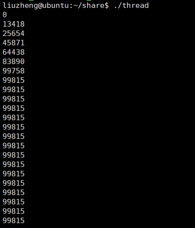
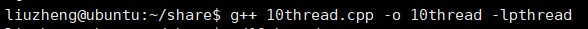
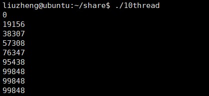
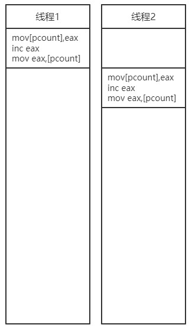
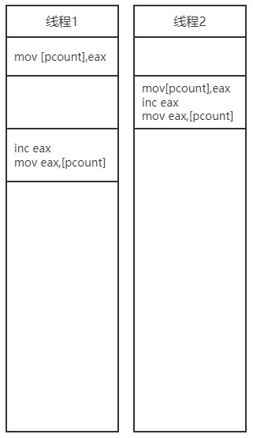
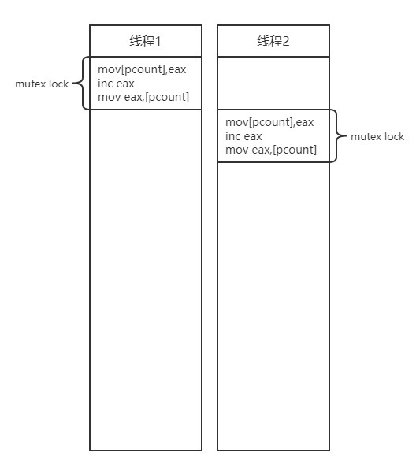
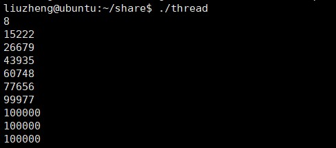
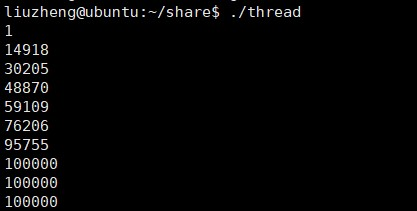
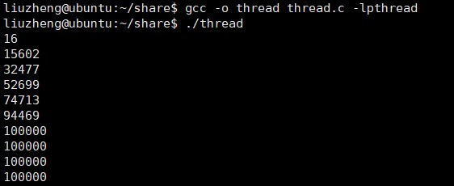

Linux下的C++服务器开发（五）
多线程与并发编程
接下来我们接触的内容是多线程，首先我们先理解几个概念：
- 程序：很简单，我们写好的源代码就是一个程序
- 进程：当程序运行起来，跑起来它就变成了一个进程
- 并发：是指一个时间段内执行多个操作
- 并行：是指两个或多个操作同时进行
- 线程：一条线程指的是进程中一个单一顺序的控制流
- 多线程：多线程是实现并发和并行的一种手段，一个进程中可以并发多个线程，每条线程并行执行不同的任务并且线程之间资源是共享的。
接下来我们聊聊为什么要有多线程，如果只有一个线程，那么任务就是按顺序一点一点执行的，你必须等待前面的任务完成后，才能开始执行下一个任务，这是我们不想要的，因为这太浪费时间了。引入多线程可以在你执行某个任务的过程中，执行其他任务。所以在耗时多任务中，应用非常广泛。
接下来我们从另一个方面考虑，既然我们要通过并发的手段来提高效率，那为什么一定是多线程呢？为什么不是多进程呢？线程包含在进程里，那多进程理应也可以实现并发呀，没错多进程确实也可以实现并发，使用多进程并发是将一个应用程序划分为多个独立的进程（每个进程只有一个线程），这些独立的进程间可以互相通信，共同完成任务。而且由于操作系统对进程提供了大量的保护机制，以避免一个进程修改了另一个进程的数据，使用多进程比多线程更容易写出安全的代码。但也有很大的弊端：
- 在进程件的通信，无论是使用信号、套接字，还是文件、管道等方式，其使用要么比较复杂，要么就是速度较慢或者两者兼而有之。
- 运行多个进程的开销很大，操作系统要分配很多的资源来对这些进程进行管理。
这恰恰是最大的痛点，所以多进程并不是一个好的选择。
相反，线程是轻量级的进程，每一个线程可以独立的执行不同的程序序列，但线程不独立的拥有资源，并且线程依赖于创建它的进程而存在也就是说，同一进程中的多个线程共享相同的地址空间，可以访问进程中的大部分数据，指针和引用可以在线程间进行传递。这样，同一进程内的多个线程能够很方便的进行数据共享以及通信，也就比进程更适用于并发操作。
接下来我们看一个简单的程序体验一下多线程：
例1(C版)：
1 |
|
这个程序，pthread_t表示的就是线程的id，我们声明一个数组用来存放它们，我们通过pthread_create函数创建十个线程，注意这里面的几个参数，第一个参数代表指向线程标识符指针，第二个表示一个不透明的属性对象，可以被用来设置线程属性，你可以指定线程属性对象，也可以使用默认值NULL，第三个代表线程运行函数起始地址，一旦线程被创建就会执行，arg表示运行函数的参数，它必须通过把引用作为指针转换（隐式转换）为 void 类型进行传递，如果没有传递参数，则使用 NULL。
1.编译多线程的c文件用的指令是gcc -o 可执行文件名 源文件名 -lpthread，注意最后的-lpthread，因为Linux下pthread库是作为封装好的第三方库引进的所以需要使用这样的选项编译。
2.运行程序

C++版：
1 |
|
接下来我们编译链接程序：
1.输入指令g++ 原文件名 -o 可执行程序名 -lpthread，还是要注意后面的-lpthread选项。

2.运行程序

唉？这是怎么回事？
我们现在已经将两个例子都跑起来了，但是结果好像都不尽如人意，这是这怎么回事？我们先来看第一个例子，第一个例子中本来count会输出到100000，但为什么趋于一个稳定值后不变了？而且这个稳定值还差一点才达到100000。接下来我们就来剖析一下，整个例1中最为关键的一句话就是**(*pcount)++**，因为我们后来也是输出它嘛，所以我们剖析他，接下来将涉及到一部分的汇编知识，主要是从0开始的汇编语言（二），从0开始的汇编语言（四） 这两篇的内容，可以看一下再继续学习下面的内容。因为我们上面文章中使用的是8086CPU所以在实际上还是有点区别的，接下来的汇编语言都是将左边的数据进行操作后存储到右边。接下来我们将(*pcount)++，变成汇编语言：
1 | mov [pcount],eax |
这里mov将前面的内容，赋值给后面的内容。现在我们知道了(*pcount)++背后的汇编指令，但到底发生了什么呢？我们理想中的运行方式应该是这样的(假设最开始[pcount]的值为0)：

线程应该是完成了++操作后，将控制权转出给下一个线程。这样线程1的结果是([pcount])=1，线程2的结果是([pcount])=2。
但你懂得，世界不会每一件事都按照人的意愿来，在运行的过程中有概率会变成这样：

在线程1刚刚将[pcount]中的内容放到寄存器后，控制权就被线程2抢夺走了，这个时候线程2又将[pcount]中的内容放到寄存器中，然后进行++操作，再将寄存器中的数据放到了[pcount]中，这样线程2的结果就是([pcount])=1,eax=1。控制权回到线程1手中，在线程1中的寄存器eax的值还是0，它进行了一次++操作，所以线程1的结果也是([pcount])=1，这并不是我们想要的，也恰恰就是这个原因导致了我们程序的错误。
互斥锁mutex lock
在多线程中，多个线程同时操作的资源，叫做临界资源也就是上面例子中的pcount。多线程同时操作一个临界资源就会出现问题，为了解决这个问题，我们提出了第一个解决方案：互斥锁(mutex lock)。
首先，我们来了解一下互斥锁都做了什么，互斥锁就像是一条链子，它将语句紧紧地绑在了一起，如果正在运行的锁内语句没有运行完成，那么其他线程是无法抢夺控制权的，其他的线程会进入睡眠状态，等待正在进行的线程结束，所以就解决了同时操作一个临界资源会出现的问题。

接下来我们看一下应该如何加锁，以c为例：
1 |
|
我们在来编译运行一下看看结果如何：
1.编译链接程序：
2.运行程序：

这回结果就是我们希望了。
自旋锁spin lock
我们刚刚说互斥锁是解决线程错误的第一个方案，而我们现在要说的自旋锁就是第二个方案。自旋锁的工作机制和互斥锁很不相同，互斥锁是当一个加了互斥锁的线程正在进行的时候，其他的线程都会放弃抢夺CPU的控制权，进入睡眠状态，但自旋锁不是，当一个加了自旋锁的线程正在进行时，其他的线程看到它，就会在原地等待，等到正在进行的线程结束了，自旋锁unlock了，其余线程就开始抢夺自旋锁，抢夺到自旋锁的线程开始执行线程。自旋锁说白了其实也是将锁内内容紧紧的连接到一起，不允许在运行的途中转交控制权。自旋锁的语法和互斥锁类似，还是以c为例我们看看自旋锁的语法：
1 |
|
接下来还是编译链接程序：
运行程序：

同样我们也解决了bug。
自旋锁VS互斥锁
现在我们已经知道两种解决此类bug的方式了，可是我们应该使用哪一个呢？
我们之前也有讲述过两种锁的工作机制，一个会挂起等待，一个会原地等待。假如我们来排队，队伍里面有10个人。如果我们排队为了做核酸，每一个人不需要多久就可以做完，那么我们都会想在原地等一会。如果我们是为了办理一些复杂的业务，那么一个人占用的时间就会很长，我们就会找个地方休息一会，而不是原地等待。程序也是如此，如果锁内的内容很少，那么用自旋锁显然比互斥锁要好，因为自旋锁会节省下来线程切换的消耗，如果锁的内容很多，那么还是互斥锁更好一点，因为自旋锁在原地等待的同时也会占用CPU。
原子操作
上面我们提到了两种方案去解决线程问题，其本质都是将几条汇编指令紧密的联系在一起，从一开始执行就是绑定执行，直到所有语句都完成才可以继续向下执行。虽然我们用锁完美的解决了问题，但有没有更加方便的操作去解决问题呢？既然问题出在几条汇编指令执行的过程中出现线程转移问题，那我们如果把几条汇编指令糅合在一起变成一条指令，这样是不是就不会出现线程转移的问题了呢？这就是现在我们要讨论的将几条指令糅合在一起的操作，原子操作。我们通常语义下是指不能被进一步分割的最小粒子，而在计算机中的原子操作一般是指“不可被中断的一个或一系列操作”，或者说是：多个线程执行一个操作，其中任何一个线程要么完全执行完这些操作，要么没有执行这个操作的任何一个步骤。
接下来我们看一下原子操作，涉及内联汇编的知识可以先稍微了解一下：
1 |
|
可能有的小伙伴存在疑问，这都是什么？这真的能解决问题吗？我们事实说话：

接下来我们讲讲我们写的内联汇编的函数：
1 | asm volatile( |
首先在c语言中内联汇编的标志词是asm，之后的关键字volatile表示接下来语句中的变量都可能随时发生改变，编译器不要对其进行进行优化，所有变量都从内存中从新读取。因为有的时候编译器会将代码进行优化，将常用的变量存储在寄存器中，当我们使用汇编指令去修改内存的值的时候，并不会同步修改寄存器里的值，如果还从寄存器中读取值就会导致错误，所以用关键字volatile修饰。
汇编指令中lock表示锁住总线，防止多个cpu同时操作一块内存。xaddl表示将操作数%2的值和%1的值相加存储在%1中。后面三个：代表着三个列表：
- : OutputOperands：在内联汇编代码中被修改的变量列表
- : InputOperands：在内联汇编代码中用到的变量列表
- : Clobbers：在内联汇编代码中用到的寄存器列表，一般是”cc”, “memory”开头，然后接着填内联汇编中用到的通用寄存器和向量寄存器，”cc”表示内联汇编代码修改了标志寄存器；”memory”表示汇编代码对输入和输出操作数执行内存读取或写入操作
所以我们可以知道old就是被修改的变量，*value，add就是用到的%1和%2，cc，memory就是用到的寄存器。
虽然看起来有很多东西，但其实之前说的三条汇编指令都变成了一条那就是**xaddl %2 , %1;**我们刚才也说了如果指令变成了一条，那就不存在运行一半，转交控制权的问题了。
原子操作可谓是大杀器了，将汇编指令糅合在一起，直接将线程转交问题彻底抹杀。
线程池
在工程中，一个服务器通常会连接多个客户端，比如马上就双11了，淘宝的服务器要可能在同一时间要接收几千万条订单信息，那么肯定不是读完一条信息，然后再读下一条信息的，一定是开多个线程同时的去读取信息，但几千万条信息，我们就要开几千万条线程吗？答案是否定的，我们来算一笔账，posix标准中的线程为8M一条，1G内存只能开128条线程，100G也不过12800条线程，这可距离千万差的远呢。所以我们引入线程池来解决这个问题。
线程池的优点有三个，前两个较为重要：
- 避免线程太多，使得内存耗尽
- 避免创建与销毁线程的代价
- 任务与执行分离
我们现在来想象一个场景，我们去银行办理业务，银行有很多柜员，每一个客户也都有不一样的需求，这些柜员就是执行，这些需求就是任务，双方都以队列的形式有序的进行，那个客户先来，那就让那个先空闲的柜员去执行任务，但可能有的时候有多个办理业务的客户去往一个柜员那里，也有可能两个柜员要同时执行一个任务，这是我们不希望的，所以银行会有一个电子屏，显示现在到谁了。这里面我们就可以将出现的东西抽象出来，柜员就是一个执行队列，客户就是一个任务队列，而电子屏就是管理组件。所以我们就知道了线程池由三部分组成：
- 执行队列
- 管理组件
- 任务队列
那就实现一个线程池吧！
 wechat
wechat alipay
alipay